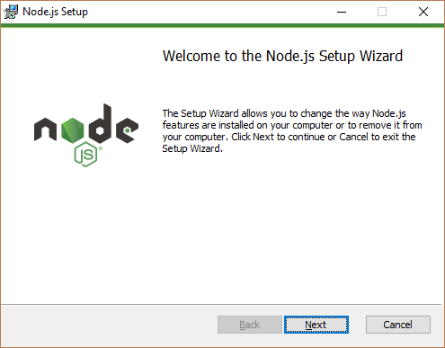
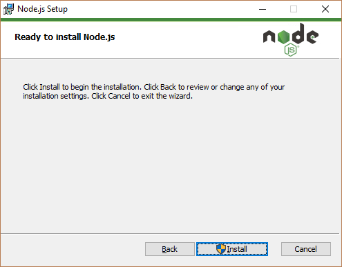
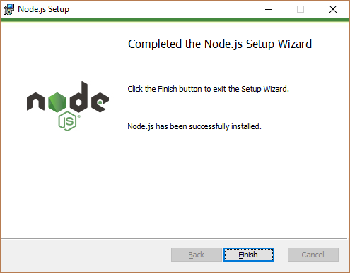
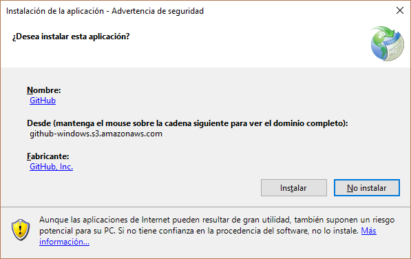
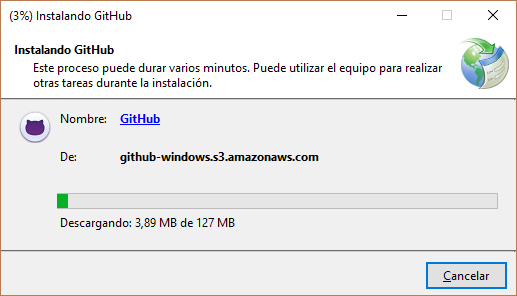
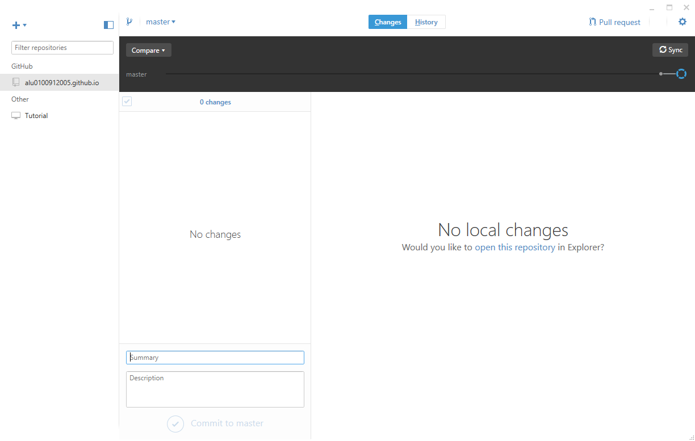

NodeJS
Vamos a https://nodejs.org/en/#download y nos descargamos la versión compatible con nuestra máquina
El lanzador del pograma nos da la bienvenida:

Aceptamos los términos de uso:
Aplicamos la configuración que prefiramos y le damos a Install

Completamos la instalación:

GitHub
Vamos a https://desktop.github.com/ y nos descargamos la versión compatible con nuestra máquina:


Y listo, si queremos cambiar algo de la configuración de instalación debemos ir a Opciones y cambiarlo:

Pandoc
Vamos a https://github.com/jgm/pandoc/releases/tag/1.19.2.1 y nos descargamos la versión compatible con nuestra máquina:
Finalizamos la instalación: